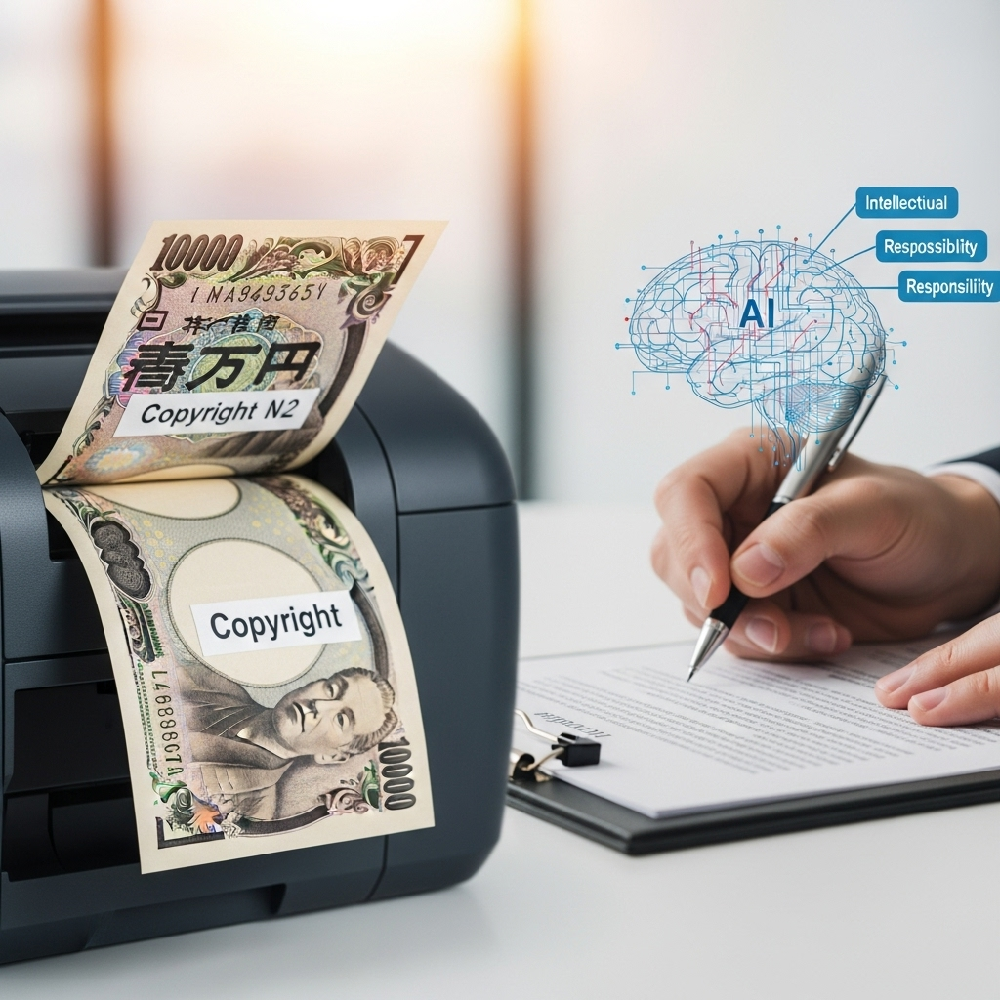
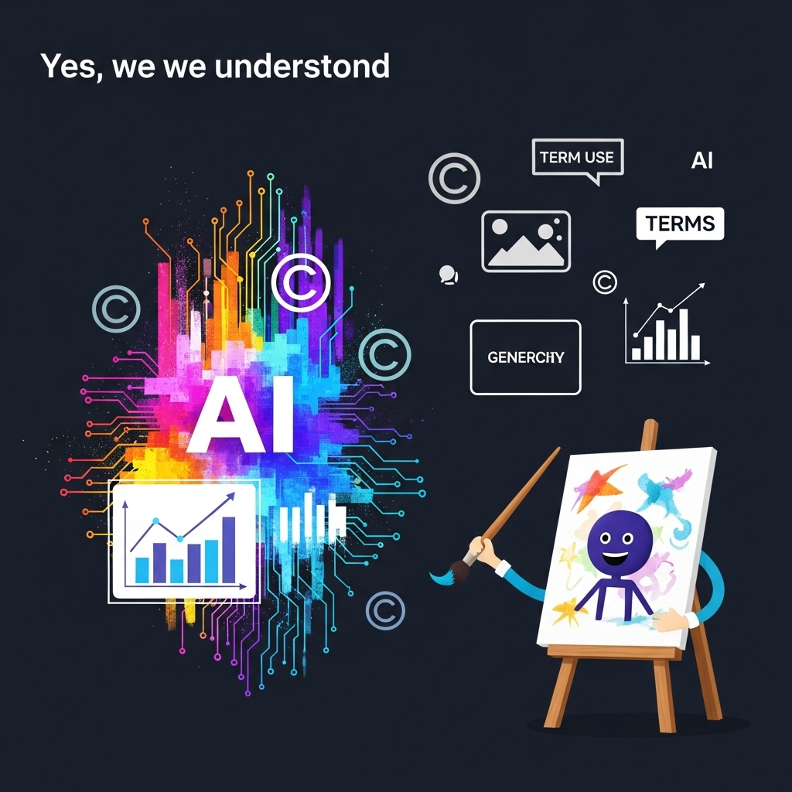
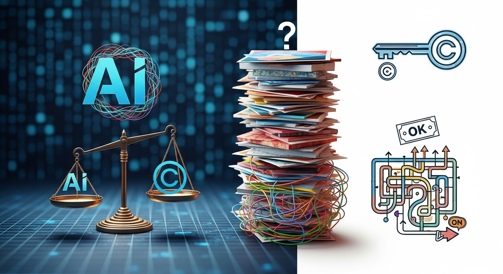
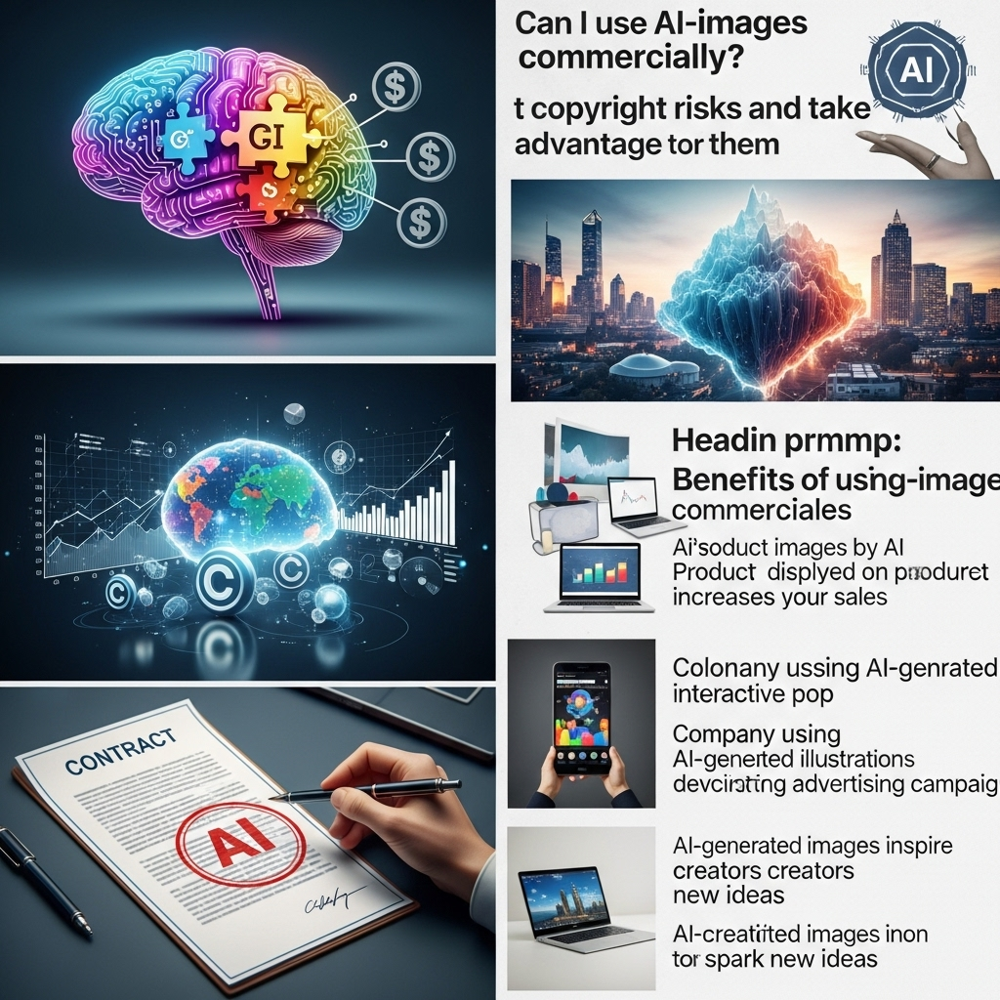
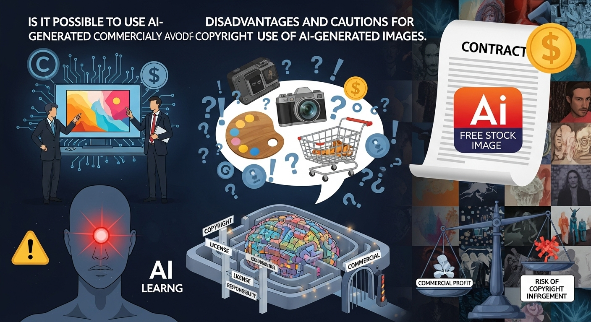
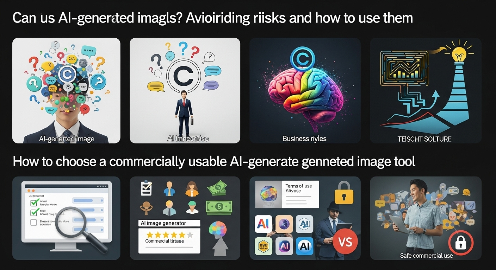
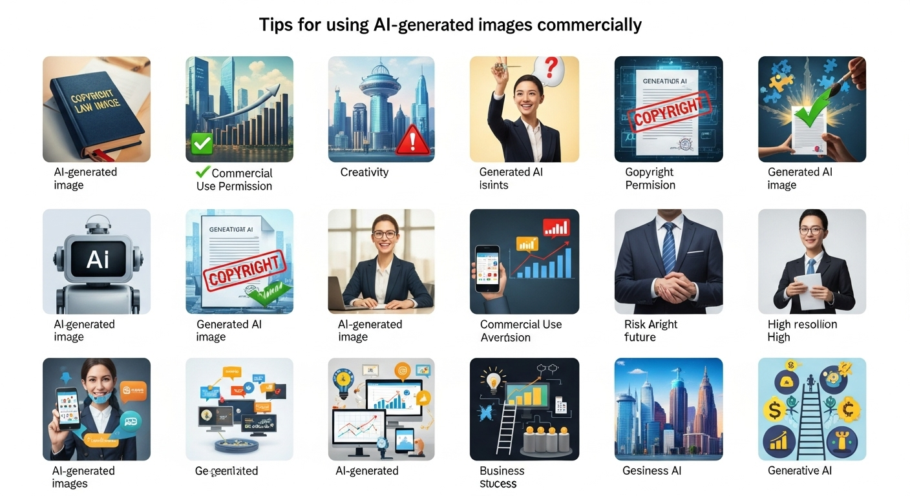

生成AI画像の商用利用は可能？著作権リスク回避と活用術

近年、人工知能（AI）技術の進化は目覚ましく、私たちの生活やビジネスのあり方を大きく変えつつあります。特に、テキストから画像を生成する「生成AI画像」は、その表現力の豊かさと手軽さから、クリエイティブ業界だけでなく、あらゆるビジネスシーンで注目を集めています。魅力的なビジュアルコンテンツが求められる現代において、生成AI画像は、これまでの画像制作の常識を覆す可能性を秘めていると言えるでしょう。
しかし、その一方で、「生成AI画像をビジネスで利用しても大丈夫なのだろうか？」「著作権はどうなるのだろう？」といった疑問や不安の声も多く聞かれます。新しい技術ゆえに、法整備が追いついていない部分や、利用規約の解釈が難しいケースも少なくありません。もし、知らず知らずのうちに著作権侵害のリスクを負ってしまえば、企業の信用を損なうだけでなく、法的なトラブルに発展する可能性も否定できません。
本記事では、このような生成AI画像の商用利用に関する皆さまの疑問や不安を解消するため、その基礎知識から、利用の可否を判断する基準、具体的なメリット・デメリット、そしてリスクを回避しながら最大限に活用するための実践的な方法まで、幅広く深く掘り下げて解説していきます。落ち着いたトーンで、しかししっかりと、そして優しく親しみやすい雰囲気で、皆さまが安心して生成AI画像をビジネスに活用できるよう、具体的な道筋を示してまいります。この革新的な技術を正しく理解し、ビジネスの加速に繋げるための羅針盤として、ぜひ最後までお読みいただければ幸いです。
生成AI画像とは？商用利用の基礎知識と現状

生成AI画像は、現代のビジネスシーンにおいて、ビジュアルコンテンツ制作の新たな地平を切り開く可能性を秘めた技術です。その活用を検討する上で、まずは「生成AI画像とは何か」という基本的な理解から、商用利用を取り巻く現在の状況までをしっかりと把握しておくことが重要になります。技術の背景にある仕組みから、法整備の現状と課題に至るまで、丁寧に見ていきましょう。
生成AI画像が注目される背景と仕組み
生成AI画像とは、人工知能がテキストの指示（プロンプト）や既存の画像データに基づいて、新たな画像を自動で生成する技術によって生み出されたビジュアルコンテンツ全般を指します。この技術は、特に近年、その精度と表現力が飛躍的に向上し、まるで人間が描いたかのような、あるいは現実には存在しないような独創的な画像を瞬時に作り出すことが可能になりました。
この技術がこれほどまでに注目される背景には、大きく分けて二つの要因があります。一つは、ディープラーニング（深層学習）というAI技術の発展です。ディープラーニングは、人間の脳の神経回路を模した「ニューラルネットワーク」を多層に重ねることで、大量のデータから複雑なパターンを学習する能力を持っています。生成AI画像においても、このディープラーニングが核となり、膨大な数の画像とそれに対応するテキスト情報（キャプションなど）を学習することで、「このテキストにはこのような画像が対応する」という関連性を自律的に理解し、新たな指示に対して適切な画像を生成する能力を獲得しています。
具体的な生成モデルとしては、初期に注目された「GAN（Generative Adversarial Network：敵対的生成ネットワーク）」や、近年主流となっている「Diffusion Model（拡散モデル）」が挙げられます。GANは、画像を生成する「生成器」と、生成された画像が本物か偽物かを判定する「識別器」が互いに競い合いながら学習することで、よりリアルな画像を生成します。一方、Diffusion Modelは、ノイズだらけの画像から段階的にノイズを取り除き、最終的にクリアな画像を生成するというアプローチを取ります。このDiffusion Modelが、より多様で高品質な画像を生成できることから、現在の主要な生成AIツールで広く採用されています。
もう一つの要因は、クリエイティブな表現の可能性を大きく広げたことです。従来、高品質な画像を制作するには、専門的なデザインスキルや高価なソフトウェア、そして多くの時間が必要でした。しかし、生成AI画像ツールを使えば、誰もが簡単なテキスト入力だけで、プロフェッショナルな品質に匹敵する画像を生成できるようになりました。これにより、デザインの知識がないビジネスパーソンでも、アイデア次第で無限のビジュアルコンテンツを生み出すことが可能になり、マーケティング、コンテンツ制作、商品開発など、多岐にわたる分野での活用が期待されています。
このような背景と仕組みの理解は、生成AI画像を単なる「便利なツール」としてではなく、その可能性と限界、そして潜在的なリスクを総合的に評価するための第一歩となります。
商用利用における法整備の現状と課題
生成AI画像が持つ革新的な可能性の一方で、その商用利用に関しては、法的な側面、特に著作権を巡る議論が活発に行われています。新しい技術の登場は常に既存の法体系に新たな問いを投げかけますが、生成AI画像の場合も例外ではありません。現状の法整備はまだ発展途上にあり、多くの課題が残されています。
まず、日本の著作権法における基本的な考え方として、「著作物」は「思想又は感情を創作的に表現したもの」と定義され、「著作者」は「著作物を創作する者」とされています。この定義に照らし合わせると、現在の日本の著作権法では、AIが単独で生成した画像は、「人間の創作意図に基づく表現」とはみなされにくく、著作物として保護されない可能性が高いというのが一般的な見解です。つまり、AIが自動生成した画像そのものには著作権が発生しない、と解釈されることが多いのです。
しかし、これはあくまでAIが「完全に自律的に」生成した場合の話であり、人間がプロンプト（指示文）を工夫したり、生成された画像を編集・加工したりする過程で、人間の創作性が加わったと判断されれば、その部分に著作権が発生する可能性はあります。この「どこまで人間の創作性が関与すれば著作権が認められるのか」という線引きは、非常に曖昧であり、個別の事例ごとに判断が求められる難しい問題です。
国際的にも、生成AIと著作権に関する法整備は途上にあります。例えば、アメリカでは、AIが単独で生成した画像には著作権を認めないという方針が示されていますが、人間が介在した場合の具体的な基準はまだ明確ではありません。欧州連合（EU）では、AIの開発・利用に関する包括的な規制法案「AI Act」の議論が進められており、学習データの透明性やリスク管理に焦点が当てられています。
このような法整備の現状における最大の課題は、「著作権の帰属が不明確であること」、そして「学習データの著作権侵害リスク」です。
- 著作権の帰属の不明確さ: AIが生成した画像について、誰が著作権を持つのか（ユーザー、AIツールの開発者、それとも誰でも利用可能か）が、法律上明確になっていません。これは、商用利用を考える企業にとって、将来的なトラブルのリスクを抱えることになります。
- 学習データの著作権侵害リスク: 生成AIは、インターネット上にある膨大な画像データを学習して画像を生成します。この学習データの中には、著作権で保護されている画像も含まれている可能性があります。AIが学習した結果として生成された画像が、特定の既存の著作物に酷似していたり、その特徴を強く引き継いでいたりする場合、元の著作物の著作権を侵害しているとみなされる可能性があります。たとえ直接的なコピーでなくても、「類似性」と「依拠性」（元の作品を知っていたか）が認められれば、著作権侵害となる可能性があります。
さらに、肖像権やパブリシティ権、商標権、意匠権といった、著作権以外の権利侵害リスクも考慮しなければなりません。実在の人物に酷似した画像を生成したり、特定のブランドロゴやキャラクターを模倣した画像を生成したりした場合、これらの権利を侵害する可能性があります。
現状では、生成AI画像の商用利用においては、各ツールの「利用規約」が最も重要な判断基準となります。法整備が追いついていない状況だからこそ、サービス提供者が定めるルールを遵守することが、現時点での最大のリスク回避策となるのです。今後、技術の進化と社会的な議論の進展に伴い、法整備も進んでいくことが予想されますが、現段階では慎重な姿勢と、常に最新情報をキャッチアップする努力が求められます。
生成AI画像の商用利用、可否の判断基準

生成AI画像をビジネスで活用する際、「これは商用利用しても大丈夫なのだろうか？」という疑問は、常に付きまとうことでしょう。法整備がまだ追いついていない現状では、明確な答えを見つけるのが難しいと感じるかもしれません。しかし、いくつかの重要な判断基準を理解し、それに基づいて慎重に検討することで、リスクを最小限に抑えながら生成AI画像を商用利用することが可能です。ここでは、その可否を判断するための三つの主要な基準について、詳しく掘り下げていきます。
判断基準１．ツール提供元の利用規約が最重要
生成AI画像の商用利用を検討する上で、最も、そして何よりも重要な判断基準となるのが、利用しようとしている生成AI画像ツールを提供している企業の「利用規約（Terms of Service）」や「ライセンスポリシー」です。法整備がまだ曖昧な現在、これらの規約が、そのツールで生成された画像の取り扱いに関する唯一にして最も具体的なルールブックとなります。
多くの生成AIツールは、無料で利用できるプランから有料のサブスクリプションプランまで様々ですが、どのプランであっても、利用を開始する際には必ず利用規約に同意するステップがあります。この利用規約の中に、「生成された画像の商用利用が可能かどうか」「著作権は誰に帰属するのか」「禁止事項は何か」といった、商用利用に関する重要な情報が明記されています。
利用規約で確認すべき具体的なポイントは以下の通りです。
- 商用利用の可否について明記されているか？
- 「商用利用を許可する」と明確に記載されているか、あるいは「個人利用のみ」と制限されているかを確認します。一部のツールでは、無料プランでは商用利用が許可されず、有料プランでのみ許可されるといったケースもあります。
- 生成画像の著作権帰属について明記されているか？
- 「生成された画像の著作権はユーザーに帰属する」と明記されているツールもあれば、「ツール提供元に帰属する」「パブリックドメインとなる」といったケースもあります。商用利用を考える上で、著作権が誰に帰属するかは非常に重要なポイントです。ユーザーに著作権が帰属しない場合、その画像を自由に利用できる範囲が限定される可能性があります。
- 免責事項について理解する
- 多くの利用規約には、生成された画像が第三者の著作権や肖像権などを侵害した場合でも、ツール提供元は一切責任を負わないという「免責事項」が記載されています。これは、たとえツールが商用利用を許可していても、最終的な法的責任は画像を利用するユーザー側にあることを意味します。この点をしっかりと理解し、リスク管理を徹底する必要があります。
- 禁止事項、制限事項を確認する
- アダルトコンテンツ、暴力的な表現、差別的な表現、特定の個人や団体を誹謗中傷する表現など、生成が禁止されている、あるいは商用利用が制限されているコンテンツの種類が明記されている場合があります。また、AIに特定の人物や既存のキャラクターを生成させること自体が禁止されているケースもあります。これらの禁止事項に抵触しないよう、細心の注意を払う必要があります。
- 規約の変更について
- AI技術の進化は非常に速く、それに伴い利用規約が頻繁に更新される可能性があります。利用規約が変更された場合、以前は許可されていた利用方法が禁止されたり、著作権の取り扱いが変わったりすることもあります。そのため、定期的に利用規約を確認し、最新の情報を把握しておくことが重要です。
利用規約は、ともすれば読み飛ばしてしまいがちな文書ですが、商用利用においては、これを徹底的に読み込み、理解することが、法的なリスクを回避するための最も確実な手段となります。もし、利用規約に不明な点があれば、ツールのサポート窓口に問い合わせるなどして、疑問を解消しておくべきでしょう。自己判断が難しい場合は、法律の専門家（弁護士など）に相談することも選択肢の一つです。ツールの選定段階から、利用規約の確認を最優先事項として位置づけましょう。
判断基準２．生成画像の著作権帰属に関する考え方
生成AI画像の商用利用を考える上で、利用規約の次に重要なのが、生成された画像の「著作権が誰に帰属するのか」という問題です。前述の通り、日本の著作権法では、現時点ではAIが単独で生成した画像には著作権が発生しないという見解が有力です。しかし、この問題は非常に複雑であり、いくつかのパターンと、それに対する考え方を理解しておく必要があります。
1. AIが完全に自律的に生成した画像の場合
- 現状の解釈: 日本の著作権法は、「思想又は感情を創作的に表現したもの」を著作物と定義し、これを「創作する者」を著作者と定めています。AIには「思想や感情」がなく、自律的な「創作意図」もないと解釈されるため、AIが完全に自律的に生成した画像は、著作物として認められない可能性が高いです。つまり、著作権は発生しない、あるいは特定の個人や法人には帰属しない、という解釈になります。
- 商用利用への影響: 著作権が発生しない場合、その画像は「パブリックドメイン」に近い状態となり、誰でも自由に利用できると考えることができます。しかし、これはあくまで著作権法上の解釈であり、後述するツール提供元の利用規約や、学習データの著作権侵害リスクとは別の問題です。また、今後法改正があった場合には、この解釈が変わる可能性も十分にあります。
2. 人間がプロンプトを工夫し、生成された画像を加工・修正した場合
- 創作性の介在: 生成AI画像は、人間が入力するテキスト指示（プロンプト）に基づいて生成されます。このプロンプトの記述方法や、生成された複数の画像の中から最適なものを選び、さらにPhotoshopなどのツールで加筆修正・加工する過程において、「人間の創作性」が介在したと判断される場合があります。
- 著作権発生の可能性: もし、人間の創作的な寄与が認められるほどに「新たな創作物」として完成された場合、その画像には著作権が発生し、その著作者は「プロンプトの工夫や加工・修正を行った人間」であると認められる可能性があります。この場合、著作権はユーザー（人間）に帰属することになります。
- 判断の難しさ: しかし、「どの程度の工夫や加工があれば著作権が認められるのか」という線引きは非常に曖昧です。単にプロンプトを入力しただけでは創作性が認められにくいですが、例えば、具体的な構図、色使い、テーマなどを詳細に指示し、何度も試行錯誤を重ねて理想のイメージに近づけたり、生成された画像を基に大幅な加筆修正やコラージュを行ったりした場合は、創作性が認められる可能性が高まります。この判断は、最終的には裁判所の判断に委ねられることになります。
3. ツール提供元の利用規約による著作権帰属の指定
- 最も現実的な判断基準は、やはりツール提供元の利用規約です。多くの生成AIツールでは、生成された画像の著作権について、以下のようなパターンで規定しています。
- ユーザーに著作権を帰属させる: ユーザーが生成した画像は、ユーザー自身の著作物として自由に利用できる（商用利用を含む）と定めているケースが最も望ましい形です。
- ツール提供元に著作権を帰属させる、または共有ライセンスとする: ツール提供元が著作権を持つ、あるいはユーザーとツール提供元が共同で著作権を持つ、といったケースもあります。この場合、ユーザーの利用範囲が制限されたり、ロイヤリティの支払いが発生したりする可能性があります。
- パブリックドメインとする: 著作権を放棄し、誰でも自由に利用できる状態とするケースもあります。
重要な注意点:
たとえ利用規約で「ユーザーに著作権が帰属する」と明記されていても、それはあくまでそのツールとユーザー間の契約上の話であり、日本の著作権法がAI生成物に著作権を認めないという現在の一般的な解釈と矛盾する可能性があります。しかし、実務上は、利用規約に従うことが最善の策となります。万が一、法的な争いになった場合、利用規約が重要な証拠となるため、利用規約の内容をよく理解し、それを遵守することが極めて重要です。
このように、生成AI画像の著作権帰属の問題は多角的であり、一概に「こうだ」と言い切れるものではありません。商用利用を検討する際には、ツール提供元の利用規約を最優先し、その上で、自身の創作的な寄与の度合いや、法的な解釈の現状を総合的に考慮して、慎重な判断を下すことが求められます。
判断基準３．学習データの著作権侵害リスクを理解する
生成AI画像の商用利用を考える上で、絶対に避けて通れないのが「学習データの著作権侵害リスク」です。生成AIは、インターネット上にある膨大な量の画像データやテキストデータを学習することで、その表現能力を獲得しています。この学習データの中には、著作権で保護されている作品が多数含まれている可能性があり、ここから生じるリスクを十分に理解しておく必要があります。
1. 学習データの取得と著作権
- 著作権法30条の4（情報解析に関する著作物の利用）: 日本の著作権法では、2018年の改正により、AIによる学習を後押しする形で「情報解析に関する著作物の利用」に関する規定（30条の4）が設けられました。この条文は、著作物に表現された思想又は感情の享受を目的としない限り、情報解析（AIによる学習も含む）のために著作物を利用できると定めています。つまり、AIが学習目的で既存の著作物を利用すること自体は、原則として著作権侵害にならない、と解釈されています。
- 「享受を目的としない」の解釈: しかし、この「享受を目的としない」という条件の解釈は非常に重要です。例えば、AIが学習した結果として生成された画像が、元の著作物の「代替物」として機能し、元の著作物の市場を侵害するような場合、それは「享受を目的としない」とは言えず、著作権侵害となる可能性があります。
2. 生成された画像が著作権を侵害する可能性
AIが学習データから画像を生成する際、以下のケースで著作権侵害のリスクが生じます。
- 既存の著作物と酷似した画像を生成した場合: AIが学習データに含まれる特定の著作物の特徴を強く学習し、その著作物と非常に似た画像を生成してしまうことがあります。この場合、「類似性」と「依拠性」（AIが学習データを通じて元の著作物に依拠していたと見なされること）が認められれば、著作権侵害となる可能性があります。特に、特定の画風やキャラクター、構図などを再現しようとした際にこのリスクが高まります。
- 特定の人物やキャラクターの画像を生成した場合: 既存のキャラクターや著名人、あるいは一般の人の顔に酷似した画像を生成した場合、著作権だけでなく、肖像権（個人の顔や姿を無断で利用されない権利）やパブリシティ権（有名人の氏名や肖像が持つ経済的価値を独占的に利用する権利）を侵害する可能性があります。これは、たとえ著作権が発生しないAI生成画像であっても、侵害となり得る非常に重要な点です。
- 商標や意匠を模倣した場合: 既存の企業のロゴ、ブランド名、特定のデザイン（意匠権で保護されるもの）などを模倣した画像を生成した場合、商標権や意匠権を侵害するリスクがあります。
3. リスク回避のための対策
このような学習データに起因する著作権侵害リスクを完全にゼロにすることは難しいですが、以下の対策を講じることでリスクを低減できます。
- 生成画像の徹底的な確認: 生成された画像が、既存の特定の著作物、キャラクター、人物、ブランドロゴなどに酷似していないか、公開前に必ず目視で確認する習慣をつけましょう。特に、商用利用する前には、複数人でチェック体制を構築することが望ましいです。
- 特定の固有名詞やキャラクター名をプロンプトに入力しない: 著作権や肖像権、商標権などで保護されている固有名詞、キャラクター名、ブランド名などをプロンプトに直接入力することは、リスクを高める行為です。一般的な表現や抽象的な指示に留めるよう心がけましょう。
- 「オプトアウト」の概念の理解: 一部の生成AIツールでは、自分の作品がAIの学習データとして利用されることを拒否する「オプトアウト」の仕組みを提供しています。これは主にクリエイター側が自身の権利を守るためのものですが、AI利用者は、どのデータが学習に使われたかを知る手立てが限られているため、生成された画像が予期せぬリスクをはらむ可能性を常に意識する必要があります。
- リスクの高い分野での利用を避ける: 著作権侵害のリスクが特に高いとされる、キャラクタービジネス、著名人の肖像利用、特定のブランドイメージを想起させるような分野での生成AI画像の利用は、特に慎重な判断が必要です。
- 法的な専門家への相談: 不安な点や、特定の画像を商用利用する際の判断に迷う場合は、著作権法に詳しい弁護士などの専門家に相談することも有効な手段です。
学習データの著作権侵害リスクは、生成AI技術の根幹に関わる問題であり、その複雑さゆえに、利用者自身が常に注意を払い、慎重な姿勢で臨むことが求められます。このリスクを理解し、適切な対策を講じることで、安心して生成AI画像をビジネスに活用できる道が開かれるでしょう。
生成AI画像の商用利用で得られるメリット

生成AI画像の商用利用には、単なるコスト削減や効率化にとどまらない、ビジネスに革新をもたらす大きなメリットが数多く存在します。これまで時間やコスト、専門スキルが障壁となっていた領域において、生成AIは新たな可能性を切り開き、企業の競争力強化に貢献するツールとなり得ます。ここでは、その主要なメリットを具体的に見ていきましょう。
メリット１．コスト削減と画像作成の時間短縮
生成AI画像を商用利用する最大のメリットの一つは、間違いなくコスト削減と画像作成にかかる時間の大幅な短縮です。現代のビジネスにおいて、ビジュアルコンテンツは不可欠であり、その制作には多大なリソースが投入されてきました。生成AIは、この状況を劇的に変える可能性を秘めています。
1. コスト削減効果
- 外注費の削減: 企業がプロのデザイナーや写真家に画像を依頼する場合、デザイン料、撮影料、モデル費用、スタジオ費用など、多額の外注費が発生します。特に高品質な画像を大量に必要とする場合、その費用は膨大になります。生成AIツールを導入すれば、これらの外注費を大幅に削減、あるいはゼロにすることも可能です。多くの生成AIツールは、月額数百円から数千円程度のサブスクリプションで利用でき、外注費と比較すれば非常に安価です。
- 人件費の最適化: 社内にデザイナーを抱えている場合でも、AIに単純な画像生成作業を任せることで、デザイナーはよりクリエイティブで高度な業務に集中できるようになります。これにより、人件費を最適化し、チーム全体の生産性を向上させることができます。また、デザインスキルを持たない社員でも、AIを使って必要な画像を生成できるため、特定の業務におけるデザイン専任者の必要性を減らすことも可能です。
- 素材購入費の削減: ストックフォトサイトから画像を都度購入する場合も、利用頻度が高ければかなりの費用がかかります。生成AIであれば、必要な画像を必要なだけ生成できるため、素材購入費を大幅に削減できます。特に、ニッチなテーマや特定のシチュエーションの画像は、ストックフォトでは見つけにくいこともありますが、AIなら自由に生成できます。
2. 画像作成の時間短縮効果
- 瞬時の画像生成: 生成AIは、テキストプロンプトを入力すれば、数秒から数十秒で複数の画像を生成します。従来の画像制作プロセスでは、アイデア出し、構図検討、撮影、編集、修正といった一連の工程に数日、場合によっては数週間かかることもありました。AIを活用すれば、このサイクルを劇的に短縮し、リアルタイムに近い速度でビジュアルコンテンツを供給することが可能になります。
- 迅速なPDCAサイクル: マーケティングキャンペーンや広告運用においては、様々なクリエイティブを試して効果を検証するPDCA（Plan-Do-Check-Action）サイクルを高速で回すことが成功の鍵となります。生成AIによって画像を瞬時に作成できるため、A/Bテスト用のバリエーション画像を短時間で大量に用意し、効果検証から改善までのサイクルを大幅に加速させることができます。これにより、市場の変化に迅速に対応し、常に最適なビジュアルコンテンツを提供できるようになります。
- 急なニーズへの対応: 突発的なイベントや緊急のキャンペーンなど、急ぎで画像が必要となる場面は少なくありません。生成AIがあれば、このような状況でも迅速に高品質な画像を生成し、タイムリーな情報発信やプロモーションを可能にします。
これらのコスト削減と時間短縮効果は、特にリソースが限られている中小企業やスタートアップ企業にとって、非常に大きなメリットとなります。生成AIを導入することで、これまでビジュアルコンテンツ制作に割いていたリソースを他の戦略的な業務に振り分けたり、より多くのコンテンツを制作して顧客エンゲージメントを高めたりすることが可能になり、ビジネス全体の成長を加速させる強力なツールとなり得るでしょう。
メリット２．既存素材にはないオリジナリティの追求
生成AI画像の商用利用は、単に効率化やコスト削減に寄与するだけでなく、既存の素材にはない、唯一無二のオリジナリティを追求できるという、クリエイティブな側面においても大きなメリットをもたらします。これは、ブランドイメージの確立や、競合との差別化を図る上で非常に重要な要素となります。
1. 既存ストック素材の限界を超える
- 「どこかで見たことのある」からの脱却: 多くの企業がストックフォトや既存の素材を利用する中で、どうしても「どこかで見たことのある画像」になってしまいがちです。これにより、ブランドの個性やメッセージが埋もれてしまうリスクがあります。生成AIは、このような既存の制約から解放され、完全にオリジナルの画像を生成できるため、ブランドの独自性を際立たせることが可能です。
- ニッチなニーズへの対応: 特定のニッチなテーマや、非常に具体的なシチュエーション、あるいは抽象的なコンセプトを表現したい場合、既存のストック素材ではなかなか見つからないことがほとんどです。生成AIであれば、「青い空の下、未来都市の上空を飛ぶ虹色のクジラ」といった、現実には存在しない、しかし明確なイメージを持つ画像を、テキスト一つで具現化できます。これにより、特定のターゲット層に深く響く、パーソナライズされたビジュアルコンテンツを提供することが可能になります。
2. 創造性の無限の可能性
- アイデアの視覚化: 生成AIは、人間の想像力とアイデアを瞬時に視覚化する強力なツールです。頭の中にある漠然としたイメージを具体的な画像として出力することで、思考を深めたり、チームメンバーとのコミュニケーションを円滑にしたりすることができます。これにより、新しいデザインコンセプトの探求や、斬新な広告表現の開発など、クリエイティブなプロセスを加速させます。
- 多様な表現スタイル: 生成AIは、写真、イラスト、油絵、水彩画、3Dレンダリングなど、多様なアートスタイルで画像を生成する能力を持っています。これにより、ブランドのトーン＆マナーに合わせて、あるいは特定のキャンペーンの目的に応じて、最適なビジュアルスタイルを自由に選択・調整することが可能です。例えば、製品の洗練されたイメージを伝えるためにはリアルな写真調を、親しみやすさを表現するためにはイラスト調を、といった使い分けが容易になります。
- ブランドイメージの強化: 完全にオリジナルで、ブランドのメッセージを正確に反映した画像を継続的に使用することで、顧客はブランドに対して一貫したイメージを持つようになります。これにより、ブランド認知度の向上、ブランドロイヤルティの構築に大きく貢献します。独自のビジュアルは、競合他社との明確な差別化要因となり、市場におけるブランドの立ち位置を強化します。
生成AIを活用することで、企業は「既存の枠に囚われない」という、クリエイティブな自由を享受できるようになります。これにより、単なる情報の伝達手段としてだけでなく、顧客の感情に訴えかけ、記憶に残るような、真に独創的なビジュアル体験を提供することが可能となり、ビジネスにおける競争優位性を確立する強力な武器となるでしょう。
メリット３．デザインスキルに依存しない高品質な画像生成
生成AI画像の商用利用がもたらす革新的なメリットの一つに、専門的なデザインスキルに依存することなく、高品質な画像を生成できるという点が挙げられます。これは、デザインの専門知識や経験を持たないビジネスパーソンにとって、ビジュアルコンテンツ制作のハードルを大きく下げる画期的な変化です。
1. 専門スキル不要でプロ級の仕上がり
- プロンプトエンジニアリングの力: 従来の画像制作では、PhotoshopやIllustratorといった専門ソフトウェアの操作スキル、色彩理論、構図の知識など、多岐にわたる専門スキルが不可欠でした。しかし、生成AIでは、これらのスキルがなくても、適切な「プロンプト」（指示文）を作成する能力、すなわち「プロンプトエンジニアリング」のスキルがあれば、AIが自動的に高品質な画像を生成してくれます。プロンプトエンジニアリングは、デザインソフトウェアの習得よりもはるかに短期間で身につけることが可能です。
- 非デザイナーの活用: これにより、マーケター、企画担当者、営業担当者、ブログ運営者など、デザインを専門としない様々な職種の社員が、自らの手で必要な画像を生成できるようになります。これにより、デザイン部門への依頼待ちの時間がなくなり、業務フローがスムーズになるだけでなく、自身のアイデアを直接ビジュアルに落とし込めるため、より意図に合ったコンテンツを迅速に作成できるようになります。
2. 試行錯誤の容易さと多様なバリエーション
- 迅速なアイデア検証: プロンプトを少し変更するだけで、異なるスタイル、構図、色合いの画像を瞬時に生成できるため、様々なアイデアを迅速に試行錯誤できます。例えば、「レトロな雰囲気の街並み」という指示に、「サイバーパンク風」「水彩画風」「夕暮れ時」といった要素を追加するだけで、全く異なる印象の画像を短時間で複数生成し、比較検討することが可能です。
- 多様なニーズへの対応: 顧客やターゲット層の多様なニーズに対応するためには、様々な視覚的アプローチが必要です。生成AIは、一つのコンセプトから複数のバリエーションを生成する能力に優れており、例えば、同じ製品画像でも、ターゲット層に応じて異なる背景や雰囲気を持たせた画像を効率的に作成できます。これにより、より多くの顧客に響くコンテンツを提供しやすくなります。
3. クリエイティブな発想の促進
- インスピレーションの源: AIが生成する画像は、時に人間の想像を超えるような、予期せぬクリエイティブな表現を生み出すことがあります。これは、デザイナーやクリエイターにとっても、新たなインスピレーションの源となり得ます。AIが生成した画像を足がかりに、さらに独自のアイデアを発展させたり、既存の概念を打ち破るようなデザインを生み出したりするきっかけとなるでしょう。
- デザイン思考の民主化: 生成AIは、デザインプロセスを特定の専門家だけのものにするのではなく、より多くの人々がデザイン思考を取り入れ、ビジュアル表現を通じてコミュニケーションを図れるようにする「デザイン思考の民主化」を促進します。これにより、企業全体のクリエイティブな文化が醸成され、イノベーションが生まれやすい土壌が形成される可能性があります。
このように、生成AI画像は、専門スキルに依存することなく高品質なビジュアルコンテンツを生成できるという点で、ビジネスにおけるクリエイティブ制作のあり方を根本から変える力を持っています。これにより、より多くの人々がビジュアル表現の力を活用し、ビジネスの様々な側面でその恩恵を享受できるようになるでしょう。
生成AI画像の商用利用におけるデメリットと注意点

生成AI画像の商用利用には多くのメリットがある一方で、その革新的な技術ゆえに、いくつかのデメリットや潜在的なリスクも存在します。これらの注意点を十分に理解し、適切な対策を講じなければ、予期せぬトラブルや法的問題に巻き込まれる可能性があります。ここでは、生成AI画像の商用利用における主なデメリットと、それに伴う注意点について詳しく解説していきます。
デメリット１．著作権・肖像権侵害の法的リスク
生成AI画像の商用利用において、最も深刻かつ避けなければならないデメリットは、著作権や肖像権、その他の知的財産権を侵害してしまう法的リスクです。このリスクは、企業の信用失墜、多額の損害賠償、そしてビジネス活動の停止に繋がりかねません。
1. 著作権侵害のリスク
- 学習データに起因する類似性: 生成AIは、既存の膨大な画像データを学習しています。この学習プロセスにおいて、特定の著作物の特徴を強く学習し、その結果生成された画像が、既存の著作物と酷似してしまうことがあります。例えば、特定の画風、キャラクター、構図、デザインなどを模倣したと判断される場合、元の著作物の著作権を侵害する可能性があります。
- 「依拠性」と「類似性」: 著作権侵害が成立するためには、「依拠性」（元の著作物を知っていたこと、またはそれを学習データとして利用していたこと）と「類似性」（元の著作物と本質的な特徴が共通していること）が必要です。AIの場合、学習データに依拠していることは明らかであるため、生成された画像が既存の著作物と類似していると判断されれば、著作権侵害となるリスクが高まります。
- 法的保護の対象外とされる可能性: 逆に、AIが生成した画像そのものに人間の創作性が認められず、著作権法上の保護対象とならないと判断された場合、第三者による無断利用を防ぐことが難しくなるというリスクも存在します。これは、オリジナリティを追求して生成した画像であっても、法的に独占的な利用が保証されない可能性があることを意味します。
2. 肖像権・パブリシティ権侵害のリスク
- 実在人物の酷似: 生成AIは、プロンプトの指示次第で、実在の人物（特に有名人）に酷似した画像を生成してしまうことがあります。これにより、その人物の肖像権（個人の顔や姿を無断で利用されない権利）を侵害するリスクが生じます。
- パブリシティ権の侵害: 著名人の氏名や肖像には、顧客吸引力という経済的価値があり、これを独占的に利用する権利がパブリシティ権です。もしAIが生成した画像が、特定の著名人のパブリシティ権を侵害すると判断されれば、損害賠償の対象となる可能性があります。たとえAIが意図せず生成したものであっても、商用利用すれば責任を問われることになります。
3. その他の知的財産権侵害のリスク
- 商標権侵害: 既存の企業ロゴ、ブランド名、トレードマークなどに酷似した画像を生成し、これを商用利用した場合、商標権を侵害する可能性があります。ブランドの識別力を損なう行為として、法的な問題に発展するリスクがあります。
- 意匠権侵害: 特定の製品デザインやパッケージデザインなど、意匠権で保護されているデザインを模倣した画像を生成した場合、意匠権を侵害するリスクがあります。
- 倫理的な問題: たとえ法的には問題がなかったとしても、既存の作品や人物を過度に模倣したような画像を商用利用することは、倫理的な批判を招き、企業のブランドイメージを損なう可能性があります。
リスク回避のための注意点:
- 徹底的な目視確認: 生成された画像は、公開前に必ず複数の目で、既存の著作物や人物、ブランドなどと酷似していないかを入念にチェックする体制を整えましょう。
- プロンプトの慎重な設定: 特定のキャラクター名、ブランド名、有名人の氏名などを直接プロンプトに入力することは避けるべきです。抽象的で一般的な表現を用いるよう心がけましょう。
- 法的専門家への相談: 不安な点がある場合や、リスクの高い分野で利用を検討する場合は、著作権法や知的財産権に詳しい弁護士などの専門家に相談し、法的アドバイスを求めることが最も確実なリスク回避策です。
- 利用規約の遵守: ツール提供元の利用規約に記載されている禁止事項や免責事項を常に意識し、遵守することが大前提となります。
生成AI画像の商用利用は、この法的リスクと常に隣り合わせであることを認識し、慎重かつ責任ある運用を心がけることが極めて重要です。
デメリット２．生成画像の品質や意図しない出力のリスク
生成AI画像は驚くべき品質の画像を生成できる一方で、その技術的な特性ゆえに、生成される画像の品質が不安定であったり、意図しない出力がなされたりするリスクも存在します。これは、ビジネスにおけるブランドイメージやコミュニケーションの質に直接影響を及ぼす可能性があるため、十分に注意が必要です。
1. 画像品質の不安定さ
- 不自然な表現や破綻: AIは学習したパターンに基づいて画像を生成しますが、時として人間が見ると不自然に感じるような表現（例えば、指の数が多すぎる、体のバランスが崩れている、意味不明な文字が描かれているなど）や、画像の一部が破綻しているような結果を出すことがあります。特に、複雑な構図や、人間や動物、特定のオブジェクトを詳細に描写しようとした場合に、この傾向が顕著に見られます。
- プロンプトの解釈の限界: AIはテキストプロンプトを解釈して画像を生成しますが、人間の意図を完全に正確に理解できるわけではありません。曖昧な指示や、AIが学習していない概念、あるいは複数の要素が複雑に絡み合う指示に対しては、期待通りの画像を生成できない、あるいは全く異なる解釈で画像を生成してしまうことがあります。
- 画一的な表現の傾向: 大量のデータから学習しているため、ある程度「平均的」な、あるいは「流行に沿った」画像は得意ですが、真に独創的で、人間の感性に深く訴えかけるような微細なニュアンスや、特定の芸術家の個性を再現することは、現時点では難しい場合があります。結果として、生成される画像が画一的になり、ブランドの独自性を損なう可能性もゼロではありません。
2. 意図しない出力（ハルシネーションなど）のリスク
- 「ハルシネーション（幻覚）」の発生: AIは、時に学習データには存在しない、あるいは文脈に全く合わない情報や要素を生成してしまうことがあります。これを「ハルシネーション」と呼びます。画像生成AIにおいても、プロンプトにない要素が突然現れたり、事実とは異なる情報が画像に描き込まれたりするリスクがあります。例えば、製品の説明画像に、実際には存在しない機能が描かれてしまう、といったケースが考えられます。
- 不適切なコンテンツの生成: 意図せず、あるいは悪意のあるプロンプトによって、差別的、暴力的、性的なコンテンツなど、企業のブランドイメージを著しく損なうような不適切な画像を生成してしまうリスクも存在します。たとえ生成AIツール側でフィルタリングが施されていても、完璧ではありません。このような画像が誤って公開されてしまえば、炎上や信用失墜に直結します。
- ブランドイメージの毀損: 品質が低い画像や、意図しない不適切な画像が商用利用されてしまうと、企業のプロフェッショナルなイメージが損なわれ、顧客からの信頼を失う可能性があります。特に、広告や公式ウェブサイト、SNSなどで使用するビジュアルコンテンツは、企業の顔となるため、その品質管理は極めて重要です。
リスク回避のための注意点:
- 生成画像の厳格なレビュー体制: 生成された画像は、必ず人間の目で入念にレビューし、品質のチェック、不自然な箇所の有無、意図しない要素の混入などを確認する体制を構築することが不可欠です。複数の担当者でチェックする「ダブルチェック」体制も有効です。
- プロンプトエンジニアリングの習熟: 意図通りの画像を生成するためには、プロンプトの書き方を工夫し、AIが理解しやすい具体的な指示を与える「プロンプトエンジニアリング」のスキルを磨くことが重要です。試行錯誤を重ね、より効果的なプロンプトのパターンを蓄積していく必要があります。
- 既存コンテンツとの併用: 生成AI画像は万能ではありません。ブランドの核となるビジュアルや、極めて高い品質が求められる場面では、プロのデザイナーや写真家による制作、あるいはストックフォトの利用など、既存のコンテンツ制作手法と併用することも検討すべきです。
- 倫理規定の策定と遵守: 企業として、生成AI画像の利用に関する倫理規定を策定し、不適切なコンテンツの生成・利用を厳しく禁止する姿勢を明確にすることが重要です。
生成AI画像は非常に強力なツールですが、その特性を理解し、品質管理とリスク管理を徹底することで、初めて安全かつ効果的に商用利用が可能となります。
デメリット３．利用規約変更やサービス終了のリスク
生成AI画像の商用利用を検討する上で、技術的な側面や法的リスクとは別に、ツール提供元の利用規約の変更や、最悪の場合のサービス終了といった運用上のリスクも考慮に入れる必要があります。これらのリスクは、ビジネスの継続性や、これまで蓄積してきたデジタルアセットの活用に大きな影響を及ぼす可能性があります。
1. 利用規約変更のリスク
- 商用利用の制限または禁止: AI技術やそれを取り巻く法規制、社会情勢は急速に変化しています。そのため、生成AIツールの提供元は、ビジネスモデルの変更、法的リスクへの対応、ユーザーからのフィードバックなどを受けて、利用規約を頻繁に更新する可能性があります。これまで商用利用が許可されていた画像が、規約変更によって突然禁止されたり、利用に制限が加えられたりするケースも考えられます。
- 例えば、「生成画像の著作権はユーザーに帰属する」とされていたものが、「ツール提供元に帰属する」に変更された場合、これまで自由に利用していた画像が、突然利用できなくなったり、利用に際してライセンス料が発生したりする可能性があります。
- 料金体系の変更: 無料で利用できていた機能が有料化されたり、有料プランの料金が引き上げられたりする可能性もあります。これにより、予期せぬコスト増が発生し、ビジネスの収益性に影響を与えることがあります。
- 機能制限や品質低下: 利用規約の変更に伴い、生成できる画像の解像度、枚数、生成速度などの機能が制限されたり、無料プランでの生成品質が低下したりする可能性も考えられます。
2. サービス終了のリスク
- デジタルアセットの喪失: 生成AIツールの中には、ユーザーが生成した画像をクラウド上に保存する機能を提供しているものもあります。もし、利用しているサービスが突然終了してしまった場合、これらの画像データにアクセスできなくなり、重要なデジタルアセットを喪失してしまうリスクがあります。これは、過去のコンテンツ制作に費やした時間と労力が無駄になるだけでなく、ビジネスの継続性にも影響を与えかねません。
- ワークフローの停止: 生成AIツールをビジネスのワークフローに深く組み込んでいる場合、サービス終了は、画像制作プロセス全体の停止を意味します。代替ツールへの移行には時間とコストがかかり、その間、ビジュアルコンテンツの供給が滞ることで、マーケティング活動やコンテンツ配信に大きな支障をきたす可能性があります。
- 再学習・再生成の必要性: サービス終了後、別の生成AIツールに移行する場合、過去に生成した画像と全く同じものを生成できる保証はありません。プロンプトの互換性がない場合や、AIモデルの違いにより、同じプロンプトでも異なる画像が生成されるため、一から画像を再生成したり、既存の画像を修正したりする手間が発生します。
リスク回避のための注意点:
- 利用規約の定期的な確認: 利用している生成AIツールの利用規約は、少なくとも月に一度は確認し、変更がないかをチェックする習慣をつけましょう。多くのツールは規約変更時に通知を行いますが、見落とさないように注意が必要です。
- 重要な画像のオフライン保存: 商用利用する予定のある、あるいは既に利用している重要な生成AI画像は、必ずオフラインのストレージ（PCのハードドライブ、外部ストレージ、クラウドストレージサービスなど）にバックアップとして保存しておくべきです。これにより、サービス終了時のデータ喪失リスクを回避できます。
- 複数のツールを検討し、依存度を分散: 特定の生成AIツールに過度に依存するのではなく、複数のツールを試用し、状況に応じて使い分けられる体制を構築することも有効です。これにより、一つのサービスが利用できなくなった場合でも、代替手段を確保しやすくなります。
- ビジネス継続計画への組み込み: 生成AI画像をビジネスの重要な要素として位置づける場合は、利用規約変更やサービス終了のリスクをビジネス継続計画（BCP）に組み込み、万が一の事態に備えた対応策を事前に検討しておくことが賢明です。
- 信頼できる提供元の選択: 企業としての安定性、サポート体制、将来性などを考慮し、信頼できる生成AIツールの提供元を選ぶことも重要なポイントです。
生成AI技術はまだ発展途上であり、市場も流動的です。そのため、利用規約の変更やサービス終了のリスクは、ある程度避けられないものとして受け止める必要があります。しかし、これらのリスクを事前に認識し、適切な対策を講じることで、ビジネスへの影響を最小限に抑え、安全に生成AI画像を商用利用することが可能になります。
商用利用可能な生成AI画像ツールの選び方

生成AI画像の商用利用を成功させるためには、適切なツールを選ぶことが非常に重要です。世の中には数多くの生成AI画像ツールが存在し、それぞれに特徴や利用規約が異なります。安易にツールを選んでしまうと、後々、著作権問題や運用上のトラブルに発展する可能性もゼロではありません。ここでは、商用利用に適した生成AI画像ツールを選ぶための重要なポイントを、具体的に解説していきます。
選び方１．各ツールの利用規約・ライセンスを徹底確認
生成AI画像ツールを選ぶ上で、最も優先すべきは、各ツールの「利用規約（Terms of Service）」や「ライセンスポリシー」を徹底的に確認することです。これは、法的なリスクを回避し、安心して商用利用を行うための、文字通り「絶対条件」となります。
確認すべき主要な項目:
- 商用利用の可否について明確な記載があるか？
- 最も重要な点です。「商用利用を許可する」と明記されているか、あるいは「個人利用のみ」と制限されているかを確認します。
- 無料プランと有料プランで商用利用の可否が異なる場合があるため、利用するプランにおける規定を正確に把握しましょう。例えば、無料プランでは商用利用が禁止され、有料プランで初めて許可される、といったケースはよくあります。
- 特定の業界や用途（例：アダルトコンテンツ、医療、政治など）での利用が制限されている場合もありますので、自社のビジネス内容に合致しているかを確認します。
- 生成画像の著作権帰属について明記されているか？
- 生成された画像の著作権が「ユーザーに帰属する」と明確に記載されているツールを選ぶのが最も望ましいです。これにより、ユーザーは生成した画像を自由に利用・編集・配布する権利を得やすくなります。
- 「ツール提供元に帰属する」または「共同著作権」とされている場合、利用範囲に制限があったり、ロイヤリティの支払いが発生したりする可能性があります。
- 「パブリックドメインとなる」とされている場合、著作権は発生しないため、誰でも自由に利用できますが、その画像を独占的に利用する権利は得られません。
- 著作権に関する記述が曖昧なツールは、トラブルのリスクが高いため、避けるか、事前に問い合わせて明確な回答を得るべきです。
- 免責事項の内容を理解する
- ほとんどのツールには、「生成された画像が第三者の著作権や肖像権などを侵害した場合でも、ツール提供元は一切責任を負わない」という免責事項が記載されています。これは、最終的な法的責任はユーザー側にあることを意味するため、この点を十分に理解し、自己責任でリスク管理を行う覚悟が必要です。
- 免責事項の範囲や内容が不当に広いと感じる場合は、利用を再検討することも重要です。
- 禁止事項、制限事項について確認する
- 生成を禁止されているコンテンツ（例：暴力、差別、アダルト、特定の個人を攻撃する内容など）の種類を確認します。
- 既存のブランドロゴ、キャラクター、著名人などを意図的に生成することに関する制限がないかを確認します。これらの生成は、著作権や肖ート権、商標権などの侵害リスクに直結するため、非常に重要です。
- 規約の変更に関する条項
- 利用規約が変更された場合の通知方法や、変更後の規約への同意方法（自動同意か、明示的な同意が必要か）についても確認しておくと良いでしょう。定期的な規約確認の習慣化が求められます。
確認のポイント:
- 最新の規約をチェック: 利用規約は頻繁に更新される可能性があります。必ず公式サイトで最新版の規約を確認しましょう。
- 日本語版と英語版の確認: 日本語版の規約が提供されている場合でも、原文が英語版であることも多いため、可能であれば英語版も確認し、解釈に齟齬がないか確認するとより確実です。
- 不明点は問い合わせる: 利用規約の内容で不明な点や解釈に迷う点があれば、臆することなくツール提供元のサポートに直接問い合わせましょう。明確な回答を得られない場合は、利用を避けるか、法的専門家への相談を検討すべきです。
利用規約の徹底的な確認は、生成AI画像の商用利用における「法的安全弁」です。これを怠ると、後々の大きなトラブルに繋がりかねないため、時間をかけてでも丁寧に行うことを強くお勧めします。
選び方２．商用利用実績やサポート体制の有無
生成AI画像ツールを選ぶ際には、利用規約の確認と並行して、そのツールの商用利用実績や、提供元のサポート体制の有無も重要な判断基準となります。特に、ビジネスで安定的に利用していくことを考えると、これらの要素はツールの信頼性や持続可能性を測る上で不可欠です。
1. 商用利用実績の確認
- 企業の導入事例: 既に多くの企業がそのツールを商用利用しているか、具体的な導入事例や成功事例が公開されているかを確認しましょう。大手企業や信頼性の高い企業が導入している実績があれば、そのツールの安定性、信頼性、そして商用利用における法的リスクへの配慮がある程度なされていると判断する材料になります。
- コミュニティやユーザーの声: 活発なユーザーコミュニティが存在するか、オンラインフォーラムやSNSでツールの評価や商用利用に関する議論がされているかを確認するのも有効です。他のユーザーがどのようにツールを商用利用しているか、どのような問題に直面しているかといった生の声は、非常に参考になります。
- メディアでの紹介: 専門メディアやビジネス系メディアで、そのツールが商用利用に適したAIツールとして紹介されているかどうかも、信頼性を判断する一つの指標となります。
商用利用実績が豊富なツールは、それだけ多くのユーザーによって様々な用途で試され、問題点が洗い出されて改善されてきた歴史があると言えます。また、提供元も商用利用における法的・倫理的課題に対する意識が高い傾向にあると期待できます。
2. サポート体制の有無と充実度
- カスタマーサポートの有無: 何か問題が発生した際に、問い合わせができるカスタマーサポート窓口が設置されているかを確認します。メール、チャット、電話など、対応しているチャネルも重要です。特に、緊急性の高い問題が発生した際に、迅速に対応してもらえるかどうかがビジネスの継続に大きく影響します。
- 日本語サポートの有無: 日本語で問い合わせができるサポート体制が整っているかは、日本人ユーザーにとって非常に重要なポイントです。英語のみのサポートの場合、コミュニケーションに時間がかかったり、ニュアンスが伝わりにくかったりする可能性があります。
- FAQやヘルプドキュメントの充実度: ツールの使い方、トラブルシューティング、利用規約に関するQ&Aなどが充実したFAQやヘルプドキュメントが提供されているかを確認します。自己解決できる情報が豊富にあれば、日常的な疑問や問題解決に役立ちます。
- 開発の継続性・アップデート頻度: AI技術は日々進化しており、ツールの機能も頻繁にアップデートされます。開発が活発に行われ、定期的に機能改善やバグ修正が行われているツールは、将来性があり、長期的な利用に適していると言えます。ツールのリリースノートやブログで、アップデート履歴を確認してみましょう。
- 企業としての安定性: ツール提供元の企業が、財務的に安定しており、長期的なサービス提供が見込めるかどうかも考慮すべき点です。スタートアップ企業の場合、革新的な機能を持つ一方で、サービス終了のリスクも高まる可能性があります。
商用利用を前提とする場合、ツールは単なるソフトウェアではなく、ビジネスパートナーとしての側面を持ちます。そのため、ツールの機能性だけでなく、提供元の信頼性や、困ったときに頼れるサポート体制が整っているかどうかも、非常に重要な選定基準となるのです。これにより、安心してツールを導入し、ビジネスに集中できる環境を整えることができます。
選び方３．生成画像の著作権帰属と免責事項の把握
生成AI画像ツールの選定において、最も深く掘り下げて理解すべき項目の一つが、「生成画像の著作権帰属」と「免責事項」です。これらは、商用利用における法的リスクと、万が一のトラブル発生時の責任の所在を明確にする上で、極めて重要な要素となります。
1. 生成画像の著作権帰属の把握
前述の「判断基準２」でも触れましたが、ツールによって生成画像の著作権の取り扱いは大きく異なります。
- ユーザーに著作権が帰属するケース（最も望ましい）:
- 多くの商用利用を目的とした生成AIツールは、有料プランにおいて、生成された画像の著作権がユーザー（生成者）に帰属すると定めています。この場合、ユーザーは生成した画像を自身のビジネス目的で自由に利用、改変、配布、販売などが可能となります。
- しかし、これはあくまで「ツール提供元とユーザー間の契約」上の話であり、日本の著作権法がAI生成物の著作権を認めないという一般的な解釈とは別問題であることに注意が必要です。それでも、実務上は、ユーザーに著作権が帰属するとされているツールを選ぶことが、最もリスクが少なく、自由度が高いと言えるでしょう。
- ツール提供元に著作権が帰属するケース:
- 一部のツールでは、生成された画像の著作権がツール提供元に帰属すると定めている場合があります。この場合、ユーザーはツール提供元が定める範囲内でのみ、画像を商用利用できます。利用範囲が制限されたり、別途ライセンス料が発生したり、特定の用途での利用が禁止されたりする可能性があります。例えば、生成した画像をTシャツなどの商品に印刷して販売する行為が禁止されている、といったケースです。
- パブリックドメインとなるケース:
- 著作権を放棄し、生成された画像を誰でも自由に利用できる「パブリックドメイン」と定めているツールもあります。この場合、著作権侵害のリスクは低いですが、その画像を独占的に利用する権利は得られません。競合他社も同じ画像を自由に利用できるため、オリジナリティや差別化の観点からは不利になる可能性があります。
- 共有ライセンスとなるケース:
- ユーザーが生成した画像を、ツール提供元や他のユーザーが利用できるような「共有ライセンス」を定めている場合もあります。これにより、ユーザーの生成した画像が、他のユーザーの学習データとして利用されたり、ギャラリーで公開されたりすることがあります。商用利用を考える上で、この共有ライセンスの範囲がどこまで及ぶのかを理解しておく必要があります。
2. 免責事項の把握
免責事項とは、ツール提供元がどのような状況下で責任を負わないかを明記した条項です。これは、万が一トラブルが発生した際に、誰が責任を負うのかを明確にするために非常に重要です。
- 第三者の権利侵害に関する免責: ほとんどの生成AIツールは、生成された画像が第三者の著作権、肖像権、商標権、意匠権などを侵害した場合でも、ツール提供元は一切責任を負わないと明記しています。これは、最終的な責任は画像を商用利用するユーザー側にあることを明確に示しています。
- このため、ユーザーは生成AI画像を商用利用する前に、必ず自身で画像のチェックを行い、権利侵害のリスクがないかを慎重に判断する義務があります。
- サービスの中断・終了に関する免責: サービスが中断したり、終了したりした場合でも、ツール提供元はユーザーが被った損害に対して責任を負わない旨が記載されていることが一般的です。これは、前述の「デメリット３」で述べたサービス終了のリスクと関連しており、重要な画像は必ずバックアップを取っておくべき理由となります。
- 生成画像の品質に関する免責: 生成された画像の品質や正確性、特定の目的に対する適合性について、ツール提供元が保証しない旨が記載されていることもあります。これは、AIが生成する画像の品質が常に一定ではないこと、意図しない出力が発生する可能性があることと関連します。
重要なポイント:
- 自己責任原則の徹底: 生成AI画像を商用利用する際は、常に「自己責任」の原則を強く意識する必要があります。ツール提供元の規約を遵守し、自らが生成・利用する画像に対する最終的な責任はユーザー自身が負う、という認識を持つことが不可欠です。
- リスクとリターンのバランス: 著作権の帰属や免責事項が、自社のリスク許容度とビジネスモデルに合致しているかを慎重に評価しましょう。高い自由度を求めるならば、ユーザーに著作権が帰属するツールを選び、その分、自身でのリスク管理を徹底する必要があります。
生成画像の著作権帰属と免責事項は、生成AI画像の商用利用における法的・倫理的基盤を形成するものです。これらを深く理解し、自社のビジネス戦略と照らし合わせて最適なツールを選ぶことが、安全かつ効果的なAI画像活用への第一歩となります。
生成AI画像の商用利用術

生成AI画像をビジネスに安全かつ効果的に組み込むことで、その革新的な能力を最大限に引き出し、業務を加速させることが可能です。ここでは、具体的な商用利用の活用術をいくつかご紹介し、それぞれのシーンでどのように生成AI画像が役立つのかを詳しく見ていきましょう。
活用術１．SNS投稿やブログ記事のアイキャッチ
ソーシャルメディア（SNS）やブログは、現代のデジタルマーケティングにおいて不可欠なツールです。これらのプラットフォームで情報が溢れる中、ユーザーの目を引き、コンテンツに興味を持ってもらうためには、視覚的に魅力的でインパクトのあるアイキャッチ画像が極めて重要になります。生成AI画像は、このニーズに迅速かつ効果的に応える強力なツールとなります。
1. 視覚的魅力でエンゲージメント向上
- 目を引くサムネイル: SNSのタイムラインやブログ記事一覧では、画像が最初に目に入ります。生成AIを使えば、投稿内容に合わせたユニークで目を引くサムネイル画像を簡単に作成できます。例えば、ブログ記事のテーマが「未来の働き方」であれば、未来的なオフィス風景や、AIと共存する人間のイラストなどを生成し、読者の好奇心を刺激することができます。
- クリック率の向上: 魅力的なアイキャッチ画像は、投稿や記事のクリック率（CTR）を向上させる重要な要素です。AIによって多様なデザインやスタイルの画像を生成し、A/Bテストを通じて最も効果的な画像を見つけ出すことで、より多くのユーザーをコンテンツに誘導することが可能になります。
- ブランドイメージの統一: 生成AIは、特定のスタイルや色調、テーマに沿った画像を継続的に生成できるため、SNSやブログ全体でブランドの視覚的な統一感を保ちやすくなります。一貫性のあるビジュアルは、ブランド認知度を高め、プロフェッショナルな印象を与える上で非常に効果的です。
2. 迅速なコンテンツ制作と多様な表現
- 時間とコストの削減: 毎日のSNS投稿や定期的なブログ記事の更新において、それぞれのコンテンツに合った高品質な画像を制作するのは、時間とコストがかかる作業でした。生成AIを活用すれば、数分で複数の候補画像を生成できるため、コンテンツ制作のリードタイムを大幅に短縮し、より多くのコンテンツを効率的に発信できるようになります。外注費用やストックフォト購入費用も削減できます。
- 多様なテーマへの対応: ニュース速報から季節のイベント、特定の製品紹介まで、SNSやブログで扱うテーマは多岐にわたります。生成AIは、どのようなテーマにも対応できる柔軟性を持っており、例えば「春の新商品キャンペーン」であれば桜をモチーフにしたイラスト、「夏の旅行ガイド」であれば異国情緒あふれる風景写真風の画像を、瞬時に生成できます。
- ニッチな表現の実現: ストックフォトでは見つかりにくいような、非常に特定のシチュエーションや抽象的なコンセプトの画像も、生成AIならテキストプロンプトで具体化できます。これにより、よりターゲット層に深く響く、パーソナライズされたビジュアルコンテンツを提供することが可能になります。
3. 活用時の注意点とヒント
- プロンプトの工夫: 意図通りの画像を生成するためには、「どのような雰囲気か」「何が描かれているか」「どのようなスタイルか」などを具体的に指示するプロンプトの工夫が重要です。例えば、「賑やかな街並みの写真」だけでなく、「夕暮れのネオン輝くサイバーパンク風の東京の街並み、雨上がりの路面、高層ビル群、リアルな写真」のように、詳細な情報を加えることで、より質の高い画像を生成できます。
- 著作権・肖像権リスクの確認: 生成AI画像をそのまま利用する前に、必ず利用規約を確認し、著作権や肖像権侵害のリスクがないかを入念にチェックしましょう。特に、人物の顔や特定のブランドロゴが含まれていないか注意が必要です。
- 後加工の検討: 生成された画像をそのまま使用するだけでなく、色調補正、トリミング、テキストの追加など、簡単な後加工を加えることで、さらに品質を高め、ブランドの独自性を強調することができます。
- アクセシビリティへの配慮: 画像には、視覚障害者向けの代替テキスト（alt text）を必ず設定しましょう。これにより、全てのユーザーがコンテンツを享受できるようになります。
生成AI画像をSNS投稿やブログ記事のアイキャッチとして活用することは、デジタルマーケティングの効果を最大化し、ブランドのオンラインプレゼンスを強化するための、非常に有効な戦略です。
活用術２．Webサイトや広告バナーのデザイン素材
Webサイトやオンライン広告バナーは、企業の顔として、また顧客との重要な接点として機能します。これらのデザインは、ユーザー体験を左右し、コンバージョン率に直結するため、魅力的で効果的なビジュアル素材が不可欠です。生成AI画像は、この分野において、デザイン制作の効率化、パーソナライゼーションの強化、そしてコスト削減という大きな価値を提供します。
1. Webサイトデザインの強化
- 高品質な背景画像やヘッダー画像: Webサイトの印象は、ファーストビューで決まります。生成AIを使えば、ブランドイメージに合った高品質でユニークな背景画像やヘッダー画像を迅速に作成できます。例えば、テクノロジー企業のサイトであれば、未来的な抽象画や、クリーンなミニマルデザインの画像を生成し、訪問者に洗練された印象を与えることができます。
- コンテンツを彩るイラストやアイコン: 記事やサービス紹介ページに、内容を補完するイラストやアイコンを挿入することで、視覚的な理解を深め、ユーザーの離脱率を低下させることができます。生成AIは、多様なスタイルでこれらの素材を生成できるため、サイト全体のデザインの一貫性を保ちつつ、必要なビジュアルを柔軟に供給できます。
- 製品イメージの多様化: ECサイトなどで製品画像を掲載する際、様々な背景やシチュエーションでの製品イメージを生成AIで作成することで、製品の魅力を多角的に伝え、顧客の購買意欲を高めることができます。例えば、同じ製品でも、オフィスでの利用シーン、家庭でのリラックスシーンなど、異なるコンテキストで表示することで、幅広い顧客層にアピールできます。
2. 広告バナーの効果最大化
- A/Bテストの高速化: オンライン広告においては、バナーデザインが広告効果に大きく影響します。生成AIを使えば、同じメッセージでも、色合い、構図、イラストのスタイルなどを変えた複数のバナー画像を瞬時に生成できます。これにより、A/Bテストを高速で実施し、どのデザインが最もクリック率やコンバージョン率が高いかを効率的に検証し、広告効果を最大化することが可能になります。
- ターゲット層へのパーソナライズ: 広告は、ターゲット層に合わせてパーソナライズすることで効果が高まります。生成AIは、特定の年齢層、性別、興味関心を持つユーザーに響くような画像を生成するのに役立ちます。例えば、若い女性向けの製品であればポップで明るいイラスト、ビジネスパーソン向けであれば洗練された写真風の画像を生成し、個々のターゲット層に合わせた広告体験を提供できます。
- キャンペーンの迅速な展開: 新商品のローンチや季節限定キャンペーンなど、迅速な広告展開が求められる場面で、生成AIは非常に有効です。デザイン制作にかかる時間を大幅に短縮できるため、市場のトレンドや競合の動きに素早く対応し、タイムリーなキャンペーンを実施できます。
3. 活用時の注意点とヒント
- 著作権・肖像権・商標権リスクの徹底確認: Webサイトや広告バナーは、より多くの人の目に触れるため、著作権、肖像権、商標権などの法的リスクには最大限の注意を払う必要があります。特に、既存のブランドロゴや著名人に酷似した画像は絶対に避けるべきです。
- デザインの一貫性: 生成AIは多様な画像を生成できますが、ブランドのガイドラインやデザインシステムに沿った一貫性のあるビジュアルを意識することが重要です。無作為に生成した画像を使うのではなく、ブランドのトーン＆マナーに合うものを厳選しましょう。
- プロンプトの精度向上: 広告バナーのように限られたスペースで強いメッセージを伝えるためには、生成される画像の精度が重要です。プロンプトを具体的に、かつ簡潔に記述するスキルを磨くことで、より意図に沿った画像を生成できます。
- ユーザー体験（UX）への配慮: 生成AI画像は魅力的ですが、Webサイト全体の読み込み速度や、モバイルフレンドリーなデザインとの整合性も考慮する必要があります。画像のファイルサイズや解像度を適切に調整し、ユーザー体験を損なわないようにしましょう。
Webサイトや広告バナーにおける生成AI画像の活用は、デザイン制作の効率化と、マーケティング効果の最大化を両立させるための強力な手段です。リスクを適切に管理しながら、この革新的な技術をビジネスの成長に繋げていきましょう。
活用術３．企画書・プレゼン資料のビジュアル強化
ビジネスにおける企画書やプレゼン資料は、単に情報を伝えるだけでなく、相手にアイデアを理解させ、納得させ、そして行動を促すための重要なツールです。そのためには、論理的な構成に加え、視覚的に魅力的で分かりやすいビジュアルコンテンツが不可欠となります。生成AI画像は、この資料作成のプロセスにおいて、デザインスキルに依存せず、短時間で高品質なビジュアルを供給し、資料の説得力と専門性を格段に向上させる活用術を提供します。
1. 理解度と説得力の向上
- 抽象的な概念の視覚化: 企画書やプレゼン資料では、しばしば抽象的な概念や複雑なデータ、未来のビジョンなどを説明する必要があります。生成AIを使えば、「未来のスマートシティ」「顧客体験の向上」「持続可能なサプライチェーン」といった抽象的なテーマを、具体的なイメージとして視覚化できます。これにより、聞き手や読み手の理解を深め、メッセージの説得力を高めることができます。
- データの視覚的表現の補助: グラフや図だけでは伝えにくい、データの背景にあるストーリーや感情を、生成AI画像で表現することができます。例えば、市場の成長を示すデータに、活気ある市場の風景や、成長を象徴するような抽象的なビジュアルを添えることで、より印象的な資料に仕上げることが可能です。
- 共感を呼ぶビジュアル: ターゲット顧客の課題やニーズ、製品がもたらすメリットなどを、生成AIで生成した人物やシーンの画像で表現することで、聞き手の共感を呼び、感情に訴えかけるプレゼンテーションを実現できます。
2. 専門性とプロフェッショナリズムの演出
- 高品質なデザイン素材の提供: プロのデザイナーが作成したかのような高品質な画像を、デザインスキルがない人でも簡単に生成できるため、資料全体のデザインレベルを底上げし、専門的で洗練された印象を与えることができます。これは、特に重要な商談や投資家向けプレゼンにおいて、企業の信頼性を高める上で非常に有効です。
- ブランドイメージの一貫性: 生成AIを活用して、企業やブランドのトーン＆マナーに合わせた画像を継続的に作成することで、企画書やプレゼン資料においても、一貫したブランドイメージを保つことができます。これにより、プロフェッショナルな印象を与え、ブランド認知度の向上にも寄与します。
- 多様なビジュアルスタイルの活用: 資料の目的に応じて、写真調、イラスト調、アイコン、抽象画など、多様なビジュアルスタイルを使い分けることができます。例えば、堅実なデータ分析にはリアルな写真調を、未来のビジョンを語る際にはSF的なイラストを、といった使い分けで、資料の表現力を豊かにします。
3. 時間とコストの効率化
- 資料作成時間の短縮: 企画書やプレゼン資料の作成において、適切な画像素材を探す作業は意外と時間がかかります。生成AIを使えば、必要な画像を瞬時に生成できるため、資料作成にかかる時間を大幅に短縮できます。これにより、より内容の検討や、プレゼン練習に時間を割くことが可能になります。
- コスト削減: ストックフォトの購入費用や、デザイナーへの外注費用を削減できます。これにより、特に頻繁に資料作成を行う部署や個人にとって、大きなコストメリットとなります。
- 迅速な修正とバリエーション作成: プレゼンの内容が変更になった場合でも、生成AIを使えば、ビジュアル素材の修正や、異なるターゲット層に向けたバリエーション資料の作成も迅速に行えます。
活用時の注意点とヒント
- 情報の正確性とのバランス: 生成AI画像は、あくまで「イメージ」を伝えるためのものです。データや事実を誤解させるようなビジュアルにならないよう、情報の正確性とのバランスを常に意識しましょう。
- 過度な装飾は避ける: 魅力的だからといって、資料全体を生成AI画像で埋め尽くすのは逆効果です。あくまでメッセージを補完し、理解を助ける「ツール」として、適切な量と配置を心がけましょう。
- 著作権・肖像権リスクの管理: 資料が外部に公開される可能性がある場合、生成AI画像の著作権や肖像権侵害リスクには細心の注意を払う必要があります。特に、実在の人物やブランドロゴに酷似した画像は避けるべきです。
- プレゼンツールの活用: 生成AIで生成した画像を、PowerPointやGoogle Slidesなどのプレゼンツールに組み込む際は、画像のサイズや解像度を適切に調整し、資料全体との整合性を保つようにしましょう。
企画書やプレゼン資料における生成AI画像の活用は、ビジネスコミュニケーションの質を高め、より効果的な意思決定を促すための強力な手段です。この技術を賢く利用することで、あなたのアイデアをより鮮明に、そして力強く伝えることができるでしょう。
まとめ：生成AI画像の商用利用で業務を加速させよう
生成AI画像は、その登場以来、ビジュアルコンテンツ制作の風景を一変させる可能性を秘めた、革新的な技術として私たちの注目を集めてきました。本記事では、この生成AI画像の商用利用に関する多角的な側面を、基礎知識からメリット・デメリット、そして具体的な活用術に至るまで、落ち着いたトーンで、しかししっかりと、そして優しく親しみやすい雰囲気で解説してまいりました。
改めて強調したいのは、生成AI画像の商用利用は、現代ビジネスにおいて、コスト削減、時間短縮、オリジナリティの追求、そしてデザインスキルの民主化といった、計り知れないメリットをもたらすということです。これらの恩恵を享受することで、企業はより迅速に、より効果的に市場にアプローチし、競合との差別化を図り、最終的にはビジネスの成長を加速させることが可能になります。
しかし、その一方で、この新しい技術には、著作権・肖像権侵害の法的リスク、生成画像の品質や意図しない出力のリスク、そして利用規約変更やサービス終了といった運用上のリスクも存在します。これらのデメリットや潜在的なリスクを無視して安易に利用することは、企業の信用を損ない、法的なトラブルに巻き込まれる危険性をはらんでいます。
だからこそ、生成AI画像を商用利用する際には、以下の三つの判断基準を常に念頭に置き、慎重かつ責任ある姿勢で臨むことが不可欠です。
- ツール提供元の利用規約を最優先に徹底確認すること。
- 生成画像の著作権帰属に関する一般的な考え方と、ツールの規約を理解すること。
- 学習データに起因する著作権侵害リスクを深く理解し、適切な対策を講じること。
これらの基準に基づき、信頼できるツールを選定し、生成された画像を公開する前には必ず複数人でのチェック体制を構築するなど、リスク管理を徹底することが、安全な商用利用への第一歩となります。
生成AI技術はまだ発展途上にあり、法整備も日々議論が進められています。そのため、私たちは常に最新の情報をキャッチアップし、変化に対応していく柔軟性を持つ必要があります。しかし、この変革の時代において、リスクを恐れて新しい技術の導入をためらうことは、ビジネスチャンスの喪失に繋がりかねません。
生成AI画像は、SNS投稿のアイキャッチからWebサイトのデザイン素材、そして企画書やプレゼン資料のビジュアル強化に至るまで、多岐にわたるビジネスシーンでその真価を発揮します。この強力なツールを正しく理解し、賢く活用することで、あなたのビジネスは新たな創造性と効率性を手に入れ、これまで想像もしなかった高みへと到達するでしょう。
さあ、恐れることなく、しかし慎重に。生成AI画像の力を借りて、あなたの業務を加速させ、未来のビジネスを切り開いていきましょう。このガイドが、皆さまの生成AI画像活用における確かな羅針盤となることを心より願っています。